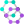

Biografia
Marie Curie
Maria Salomea Skłodowska nasceu em Varsóvia (Polônia) no dia 7 de novembro de 1867 e era a filha caçula de cinco irmãos. Sua infância foi difícil, pois ficou órfã de mãe quando tinha apenas 10 anos.
Teve dificuldades
para estudar. Isso porque, além de as mulheres não serem admitidas nas universidades, na Polônia, Marie Curie passava por grandes dificuldades financeiras.
Mas, influenciada por seu pai, que era professor de física
e de matemática, seguiu seus estudos. Primeiramente numa universidade clandestina na Polônia, depois continuou também de forma autônoma.
Quando se graduou, para prosseguir suas investigações, a cientista precisava
de um laboratório e um amigo, em 1894, a apresenta a Pierre Curie, físico renomado. Os dois acabariam partilhando sua vida e o amor pela ciência.
Em 1903 recebe o Prêmio Nobel de Física com seu marido e com Henri
Becquerel em virtude das descobertas obtidas no campo das radiações. Nesse mesmo ano, doutora-se em ciências.
Funda o Instituto Curie, em Paris, em 1914. Esse instituto visa investigar as aplicações médicas do
rádio em doentes oncológicos.
Vítima de leucemia, que adquiriu em decorrência da exposição à radioatividade, morre com 66 anos no dia 4 de julho de 1934, em Passy (comuna francesa).
Um ano após seu falecimento,
em 1935 foi a vez de uma de suas filhas, Irène Joliet-Curie, ser premiada com o Nobel da Química pela descoberta da radioatividade artificial. O prêmio foi dividido com seu marido Frédéric Joliet.
Frases de Marie Curie
 "Na vida, não existe nada a temer, mas a entender."
"Na vida, não existe nada a temer, mas a entender."-  "A vida não é fácil para nenhum de nós. Temos que ter persistência e, acima de tudo, confiança em nós mesmos."
- "Seja menos curioso sobre as pessoas e mais curioso sobre as ideias."
- "Não podemos esperar construir um mundo melhor sem melhorar os indivíduos."
- "Estou entre aqueles que acham que a ciência tem uma grande beleza."